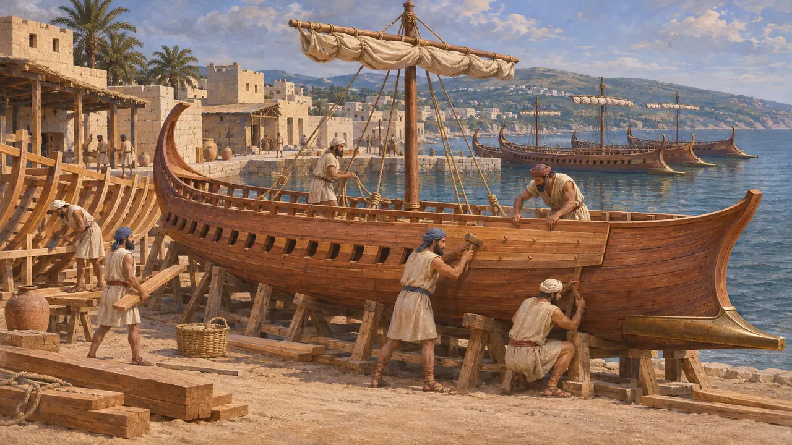
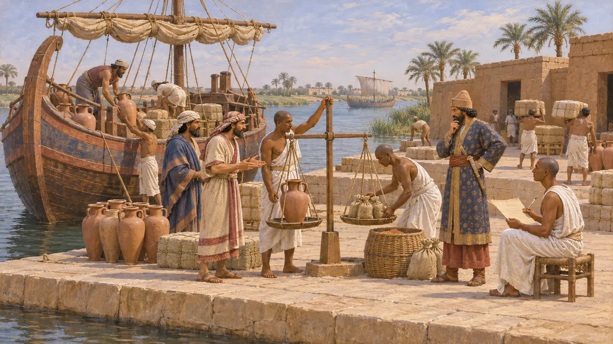
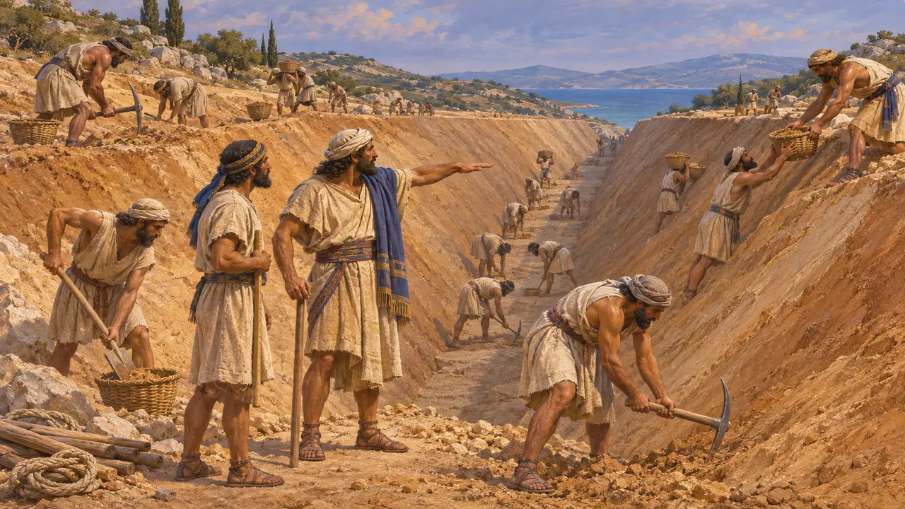
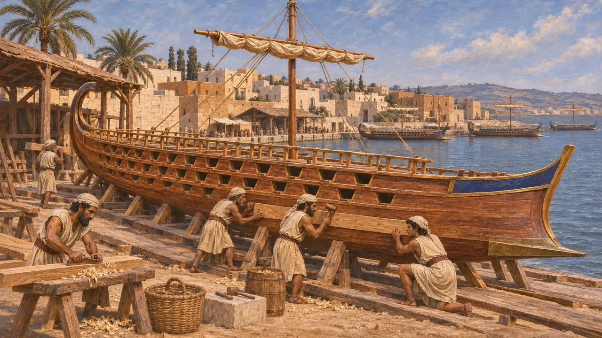
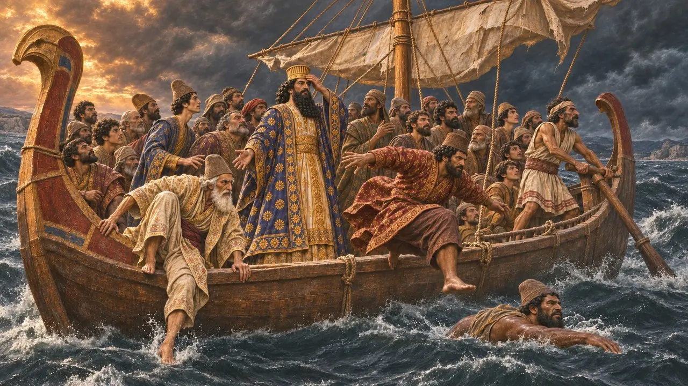

حوض السفن الفينيقي
صانعو السفن الفينيقيون لأسطول الملك، صيدا وصور، نحو 525-479 ق.م
في اللعبة: المستوى 7: سارديس تحترق
شكّلت المدن الفينيقية على ساحل المشرق، وفي مقدمتها صيدا وصور وأرواد، نواةَ الأسطول الفارسي من عهد قمبيز إلى عهد خشايارشا. فصانعو سفنها وبحّارتها هم الذين بنوا السفن الثلاثية المجاديف وأبحروا بها، فحملت الجيوش إلى مصر، وقاتلت الأيونيين عند لادي، وعبرت إلى بلاد اليونان. وكانت سفنها التجارية تتّجر أيضًا في ظل حكم الملك، وفي مصر كانت تؤدي الرسوم إلى موظفي جماركه.
في اللعبة: في اللعبة يبني الحوض سفنًا ثلاثية المجاديف بجوار الماء ويرسل جنود البحرية إلى الجيش. أما تاريخيًا فكانت سفن الملك الحربية تأتي من المدن الفينيقية وقبرص وقيليقيا ومصر، لا من أحواض في سارديس أو في بلاد اليونان.

صيدا وصور وأسطول الملك
رواية قديمةيقول هيرودوت إن أسطول قمبيز كله كان معتمدًا على الفينيقيين، الذين أبوا الإبحار لقتال قرطاج، وهي مستعمرتهم. ويعدّ لأسطول خشايارشا عام 480 ق.م نحو 300 سفينة من الفينيقيين وسوريي فلسطين، وهي أكبر الفرق، بقيادة ملوك صيدا وصور وأرواد. ويجعل السفن الفينيقية أمهر السفن إبحارًا، والصيداوية أفضلها. ويذكر أن خشايارشا استعرض الأسطول عند دوريسكوس من على سفينة صيداوية.
Herodotus 3.19; 7.89; 7.96; 7.98; 7.100

السفن التجارية في الحسابات الملكية
في السجلاتبقي من إلفنتين سجلّ جمارك يعود إلى نحو عام 475 ق.م، مكتوب بالآرامية، ثم مُحي لاحقًا ليُعاد استعمال اللفافة لكتابة قصة أحيقار. ويُدرج السجل السفن الأيونية والفينيقية الداخلة إلى مصر على مدى معظم عام واحد، والرسوم التي استوفاها موظفو الملك من حمولاتها. وهو يُظهر أن الملاحة التجارية الفينيقية كانت تعمل ضمن النظام الضريبي الملكي في عهد خشايارشا.
TAD C3.7

البراعة الفينيقية في أشغال خشايارشا العظيمة
رواية قديمةيقول هيرودوت إن الفينيقيين وحدهم في قناة آثوس حفروا قسمهم بحيث يكون أعلاه أعرض من أسفله، فلم تنهَر جوانبه. ولجسور الهلسبونت صنع الفينيقيون حبالًا من الكتّان الأبيض، والمصريون حبالًا من البردي. ويقول إن خشايارشا بعد سلاميس أمر بقطع رؤوس بعض الربابنة الفينيقيين حين ألقوا على الأيونيين تبعة خسائرهم.
Herodotus 7.23; 7.25; 7.34; 8.90

من أين جاءت السفينة ثلاثية المجاديف
متنازع عليهينسب ثوكيديدس إلى الكورنثيين بناء أولى السفن ثلاثية المجاديف اليونانية. ويذكر هيرودوت أن الفرعون نخاو بنى سفنًا ثلاثية المجاديف للبحر المتوسط والبحر الأحمر معًا. ويرى بعض المؤرخين أن هذا الطراز نشأ في فينيقيا، بينما يرى آخرون أنه لم ينتشر على نطاق واسع إلا في أواخر القرن السادس، ويعود ذلك جزئيًا إلى أن ملوك الفرس موّلوا أساطيل كبيرة. ويذكر هيرودوت 1,207 سفن ثلاثية المجاديف عام 480 ق.م، ويورد أيسخيلوس رقمًا مقاربًا، غير أن كثيرًا من المؤرخين يرون هذا العدد مبالغًا فيه.
Thucydides 1.13; Herodotus 2.159; 7.89; H. T. Wallinga, Ships and Sea-Power before the Great Persian War, 1993

السفينة المثقلة القادمة من إيون
أسطورة لاحقةيروي هيرودوت حكايةً مفادها أن خشايارشا أبحر عائدًا من إيون على متن سفينة فينيقية فهبّت عليه عاصفة. ولمّا قال الربّان إن السفينة مثقلة أكثر مما ينبغي، قفز رجال من الحاشية الفارسية إلى البحر لينقذوا الملك. فكافأ خشايارشا الربّانَ بتاج من ذهب، ثم أمر بقطع رأسه جزاءً على أرواح الفرس التي أُزهقت. ويقول هيرودوت إنه لا يصدّق هذه الحكاية، وإن خشايارشا عاد برًّا.
Herodotus 8.118-120
المصادر
- Herodotus, Histories 3.19; 7.23-34; 7.89-100; 8.90; 8.118-120
- Thucydides 1.13
- B. Porten and A. Yardeni, Textbook of Aramaic Documents from Ancient Egypt, vol. 3, 1993 (TAD C3.7)
- H. T. Wallinga, Ships and Sea-Power before the Great Persian War, 1993
- J. S. Morrison, J. F. Coates and N. B. Rankov, The Athenian Trireme, 2000
- P. Briant, From Cyrus to Alexander, 2002